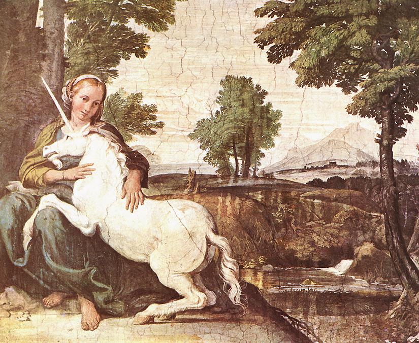

유럽 중세의 동물에 관련된 잡지에 흔히 나오는 환상종. 코뿔소가 유럽에 와전되어서 전해진 것이라 한다. 어원은 Uni(하나의)+corn(뿔)[3][4]이라고 한다. 따라서 '일각수(一角獸)'라고 불리기도 한다.
말과 같은 체구에 이마에는 한 개의 뿔이 있고 뿔의 밑부분은 흰빛이며, 중간은 검고 끝부분은 붉다. 보통 백마로 표현된다. 고대의 여행가 쿠테시아스의 기록에 의하면 일각수는 인도산(産)이라고 한다. 또한 중세의 전설에 따르면 일각수는 최고의 검술을 가진 기사와도 겨룰 수 있을 만큼 뿔을 자유자재로 움직이며 코끼리 세 마리를 뿔에 꿰어 들고 다닐 정도로 무적의 힘을 과시하지만, 오직 처녀의 매력 앞에서는 맥을 못 추고 처녀의 무릎을 베개 삼아 잠들어버리는 버릇이 있다. 그래서 일각수를 사로잡을 때는 처녀를 미끼로 삼는다고 한다.